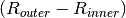
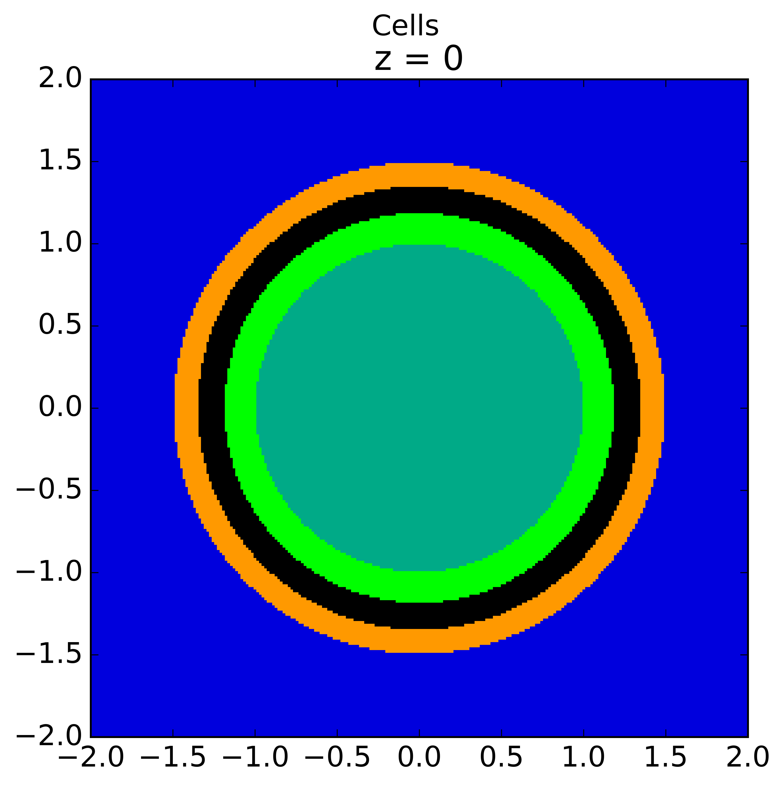
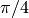
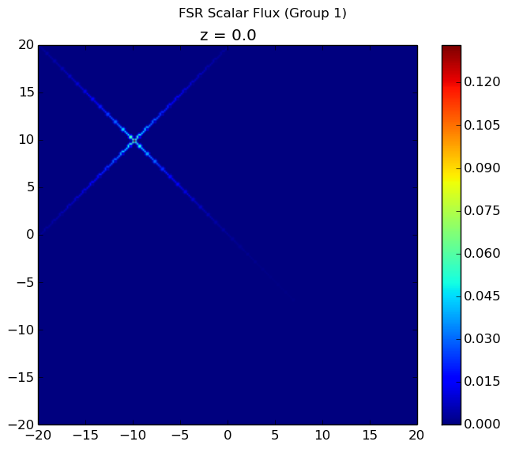
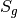
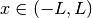
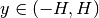
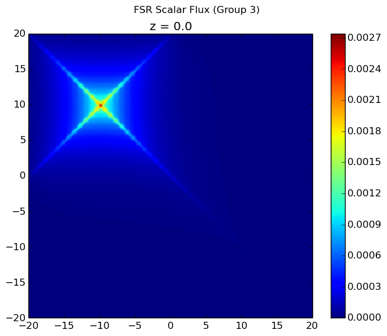

3. Writing Python Input Files¶
OpenMOC is provided to users as a Python API. As a result, there are not strict constraints on how an input file is written for an OpenMOC simulation as there are in many other scientific simulation codes. Instead, users may write a Python script or program and import OpenMOC and simply use the classes or routines which are necessary for a particular simulation. The OpenMOC/sample-input/ directory in the OpenMOC folder includes many example scripts for simulations ranging in complexity from a simple pin cell to the C5G7 benchmark problem.
The following sections describe the essential portions of the OpenMOC API needed for reactor eigenvalue calculations. For more detail on the full extent of OpenMOC capabilities, users should reference the OpenMOC API documentation.
Note
It is highly suggested that users acquire a basic understanding of Python before developing OpenMOC simulations. For users familiar with basic programming constructs such as loops and conditionals, the official Python Tutorial is an excellent place to learn Python basics. For users new to programming, the Code Academy Python Course provides an introduction to both programming essentials and the Python language.
3.1. Simulation Parameters¶
The full power of Python is available to users designing OpenMOC simulations. As a result, simulation parameters may easily be defined and redefined in a Python script for one or more simulations at a user’s discretion. However, some simulation parameters are best defined at runtime, including the number of azimuthal angles, azimuthal track spacing, number of threads, etc.
The openmoc.options module provides functionality to parse arguments defined on the command line at runtime. The full list of options available in OpenMOC are itemized and described in Runtime Options. The following code snippet illutrates how to instantiate an Options object and extract data from command line arguments.
import openmoc.options
# Instantiate and Options object
options = openmoc.options.Options()
# Retrieve runtime options parsed in by the Options object
num_threads = options.num_omp_threads
azim_spacing = options.azim_spacing
num_azim = options.num_azim
tolerance = options.tolerance
max_iters = options.max_iters
...
Table 1 below itemizes each of the runtime options and the corresponding command line arguments and Options class property attributes in the openmoc.options module.
| Runtime Option | Command Line Argument | Options Class Property Attribute |
|---|---|---|
| Help | -h, --help |
N/A |
| No. Azimuthal Angles | -a, --num-azim= |
num_azim |
| Track Spacing [cm] | -s, --azim-spacing= |
azim_spacing |
| Max. No. Transport Sweeps | -i, --max-iters= |
max_iters |
| Convergence Tolerance | -c, --tolerance= |
tolerance |
| No. OpenMP Threads | -t, --num-omp-threads= |
num_omp_threads |
| No. CUDA Thread Blocks | -b, --num-thread-blocks= |
num_thread_blocks |
| No. CUDA Threads per Block | -g, --num-gpu-threads= |
num_threads_per_block |
Table 1: Runtime options and command line arguments supported by the openmoc.options module.
3.2. Simulation Log Files¶
The openmoc.log module provides routines for printing output to the console as well as to log files. Output is reported in real-time to the console as well as stored in a persistent log file. By default, the log file name encapsulates a timestamp for the simulation starting time and is stored in the /OpenMOC/log directory (e.g., OpenMOC/log/openmoc-MM-DD-YYYY--HH:MM:SS.log).
The OpenMOC logging module uses verbosity throttling which allows for coarse-grained control of the type and amount of messages reported to the user at runtime. Each message is designated a log level, and each level is prioritized with respect to other levels. At runtime, a log level is specified for a simulation and only those messages designated at that log level or a higher priority log level are printed to the console and log file. The log levels available in OpenMOC are presented in Table 2.
| Log Level | Note |
|---|---|
DEBUG |
A debugging message |
INFO |
An informational but verbose message |
NORMAL |
A brief progress update on run progress |
SEPARATOR |
A message of a single line of characters |
HEADER |
A message centered within a single line of characters |
TITLE |
A message between two lines of characters |
WARNING |
A message to warn the user |
CRITICAL |
A message to warn of critical program conditions |
RESULT |
A message containing program results |
ERROR |
A message reporting error conditions |
Table 2: Log levels in OpenMOC in order of increasing precedence.
Informative messages using the logging module are embedded into both the C/C++ and Python source code in OpenMOC. In addition, code users may add their own messages to the output stream in Python input files. The API documentation provides a detailed accounting of the routines available in the logging module.
The following code snippet illustrates how to import the logging module into Python, set the lowest log level to DEBUG, and print messages for each level to the screen.
import openmoc.log as log
# Set the lowest acceptable log level to DEBUG mode
log.set_log_level('DEBUG')
# Print some exaple messages to the console and log file
log.py_printf('DEBUG', 'This is a DEBUG message')
log.py_printf('INFO', 'This is an INFO message')
log.py_printf('NORMAL', 'This is a NORMAL message')
log.py_printf('SEPARATOR', 'This is a SEPARATOR message')
log.py_printf('HEADER', 'This is a HEADER message')
log.py_printf('TITLE', 'This is a TITLE message')
log.py_printf('WARNING', 'This is a WARNING message')
log.py_printf('CRITICAL', 'This is a CRITICAL message')
log.py_printf('ERROR', 'This is an ERROR message')
And the following is the output displayed to the console and recorded in the log file:
[ DEBUG ] This is a DEBUG message
[ INFO ] This is an INFO message
[ NORMAL ] This is a NORMAL message
[SEPARATOR] *******************************************************************
[ HEADER ] ******************* This is a HEADER message ********************
[ TITLE ] *******************************************************************
[ TITLE ] This is a TITLE message
[ TITLE ] *******************************************************************
[ WARNING ] This is a WARNING message
[ CRITICAL] This is a CRITICAL message
[ ERROR ] This is an ERROR message
It should be noted that the py_printf(...) routine in the logging module is based on the printf routine in C/C++ and accepts a variable number of arguments. In particular, this is intended to accept formatted data to embed formatted integers, floats, strings, etc. in the output message. An example of this feature in use is given below:
import openmoc.log as log
# Set the lowest acceptable log level to NORMAL mode
log.set_log_level('NORMAL')
# Initialize some string, integer and float variables
name = 'Will Boyd'
age = 26
pi = 3.141593
# Print example messages using formatted output arguments
# to the console and log file
log.py_printf('NORMAL', 'Hello World! My name is %s', name)
log.py_printf('NORMAL', 'I am %d years old. My favorite # is %f', age, pi)
This will result in the following output messages to be printed to the console and stored to the log file:
[ NORMAL ] Hello World! My name is Will Boyd
[ NORMAL ] I am 26 years old. My favorite # is 3.141593
Note
By default, the logging module will split log messages into multiple lines of 80 characters or less each. Users may alternatively set a custom maximum line length for log messages may at runtime using the set_line_length(...) routine.
3.3. Materials Specification¶
OpenMOC uses multi-group macroscopic nuclear cross sections, provided by the user. OpenMOC does not perform self-shielding or depletion calculations, so isotropic concentrations are not used. In OpenMOC, cross section data is encapsulated by the Material class in the main openmoc Python module. A Material class may be instantiated in Python and cross sections may be loaded into it using NumPy data arrays as illustrated by the following code snippet:
import openmoc
import numpy
# Initialize material cross sections using NumPy data arrays
num_groups = 8
sigma_t = numpy.array([0.1,0.15,0.2,0.25,0.35,0.4,0.45,0.5])
sigma_f = numpy.array([0.05,0.1,0.15,0.2,0.25,0.3,0.35,0.4])
...
# Instantiate an OpenMOC Material class object with an optional string name
material = openmoc.Material(name='test material')
# Set the number of energy groups in the material
material.setNumEnergyGroups(num_groups)
# Load the cross section data into the material
material.setSigmaT(sigma_t)
material.setSigmaF(sigma_f)
...
For many simulations, defining the nuclear data cross sections by hand in a Python script is cumbersome and error-prone. As a result, OpenMOC includes the openmoc.materialize module for importing nuclear data cross sections from an HDF5 binary file. The load_from_hdf5(...) routine is used to import data and instantiate Material objects returned via a Python dictionary. The use of the openmoc.materialize module to import HDF5 binary files is illustrated in the following snippet:
import openmoc
import openmoc.materialize as materialize
# Import cross section data from an HDF5 file. This instantiates
# objects for each material and returns them in a dictionary
# indexed by a string name or integer ID
hdf5_materials = materialize.load_from_hdf5(filename='materials-data.h5',
directory='/home/myuser')
# Retrieve the material called 'moderator' in the HDF5 file
moderator = hdf5_materials['moderator']
The openmoc.materialize module defines a standard for cross section data stored in binary files. First, HDF5 files must include a '# groups' attribute with the integer number of groups in the top level of the file hierarchy. Second, the string domain type - 'material' or 'cell' - must be specified in the top level of the file hierarchy. This must match the domain_type keyword argument passed to load_from_hdf5(...) which can be either 'material' (default) or 'cell'. The domain_type keyword argument is discussed in more detail at the end of this section. Finally, multi-group cross sections to assign by material or cell must be defined as an HDF5 group with a string name or integer ID to identify the material or cell. The material group must contain the following floating point HDF5 datasets of multi-group cross section data:
'total'or'transport'or'nu-transport''nu-scatter matrix'or'scatter matrix''chi''nu-fission''fission'(optional)
Each dataset should be a 1D array of floating point values ordered by increasing energy group (i.e., from highest to lowest energies). This includes the scattering matrix which should be inner strided by outgoing energy group and outer strided by incoming energy group.
To better understand the necessary HDF file structure, it may be useful to visualize the OpenMOC/sample-input/c5g7-mgxs.h5 HDF5 file using the HDFView graphical tool. The following code snippet illustrates the use of the h5py Python HDF5 interface to write an HDF5 file with material cross section data adhering to the standard expected by the openmoc.materialize module:
import numpy
import h5py
# Create an HDF5 file to store multi-groups cross sections
f = h5py.File('materials-data.h5')
# Set the number of energy groups
f.attrs['# groups'] = 8
# Material 1
# Create an HDF5 group for this material
material_group = f.create_group('Material 1')
# Initialize cross sections as NumPy data arrays
sigma_t = numpy.array([0.1,0.15,0.2,0.25,0.35,0.4,0.45,0.5])
nu_sigma_f = numpy.array([0.05,0.1,0.15,0.2,0.25,0.3,0.35,0.4])
...
# Create datasets for each cross section type
material_group.create_dataset('total', data=sigma_t)
material_group.create_dataset('nu-fission', data=nu_sigma_f)
...
# Material 2
...
# Close and save the HDF5 file
f.close()
Lastly, the 'domain_type' parameter may be specified in conjuction with the optional geometry keyword argument. The load_from_hdf5(...) routine may be used to load multi-group cross sections directly into a pre-existing OpenMOC Geometry constructed with Materials with the same string names or integer IDs used as keys in the HDF5 binary file. Likewise, the load_from_hdf5(...) routine may be used to load multi-group cross sections directly into a pre-existing OpenMOC Geometry constructed with Cells with the same string names or integer IDs used as keys in the HDF5 binary file. The latter case may be useful when multiple Cells share the same Materials. This is illustrated with the following code snippet:
import openmoc
import openmoc.materialize as materialize
# Build an OpenMOC Geommetry with Materials, Surfaces, Cells, etc.
# The Cells must have the same IDs as those used in the HDF5 file
...
geometry = openmoc.Geometry()
...
# Import cross section data from an HDF5 file. This instantiates
# objects for each material and returns them in a dictionary
# indexed by a string name or integer ID
hdf5_materials = materialize.load_from_hdf5(filename='materials-data.h5',
directory='/home/myuser',
domain_type='cell',
geometry=geometry)
In this case there is no need to assign the Materials in the hdf5_materials dictionary to Cells since they are already incorporated into the Geometry.
Note
If datasets for both 'transport' and 'total' are defined for a material in the HDF5 file, openmoc.materialize will give precedence to the 'transport' dataset and assign it as the total multi-group cross section.
Note
If datasets for both 'nu-scatter matrix' and 'scatter matrix' are defined for a material in the HDF5 file, openmoc.materialize will give precedence to the 'nu-scatter matrix' dataset and assign it as the multi-group scattering matrix cross section.
Note
Users should note that OpenMOC will assign a minimum value of 1E-10 to all total cross sections assigned to a Material object. This prevents numerical divide-by-zero issues in the Solver, and is a useful sanity check when modeling (nearly) void regions - e.g., a fuel pin cell “gap.”
3.4. Geometry Specification¶
The geometry in OpenMOC is described using constructive solid geometry (CSG), also sometimes referred to as combinatorial geometry. CSG allows a user to create complex objects using Boolean operators on a set of simpler surfaces. In the geometry model, each unique closed volume is defined by its bounding surfaces. The CSG formulation used in OpenMOC is described in more detail in Constructive Solid Geometry.
The following sections detail how to create surfaces, cells, universes and lattices to construct a simple 4  4 pin cell lattice.
4 pin cell lattice.
3.4.1. Surfaces¶
In most cases, the first step towards building a reactor geometry is to create the surfaces defining boundaries between distinct regions. The CSG formulation for surfaces in OpenMOC is described in detail in Surfaces and Halfspaces. For LWRs, the most typical surfaces needed to model 2D rectangular lattices are the ZCylinder, XPlane, and YPlane classes. The following code snippet illustrates how to create a circle to represent a fuel pin and reflective boundary planes to surround a 4 4 lattice.
# Initialize circular fuel pin surface with an optional string name
circle = openmoc.ZCylinder(x=0.0, y=0.0, radius=0.45, name='fuel radius')
# Initialize the planar surfaces bounding the entire geometry
# with optional string names
left = openmoc.XPlane(x=-2.52, name='left')
right = openmoc.XPlane(x=2.52, name='right')
bottom = openmoc.YPlane(y=-2.52, name='bottom')
top = openmoc.YPlane(y=2.52, name='top')
# Set the boundary conditions for the bounding planes
left.setBoundaryType(openmoc.REFLECTIVE)
right.setBoundaryType(openmoc.REFLECTIVE)
bottom.setBoundaryType(openmoc.REFLECTIVE)
top.setBoundaryType(openmoc.REFLECTIVE)
3.4.2. Cells and Universes¶
The next step to create a geometry is to instantiate cells which represent unique geometric shapes and use them to construct universes. The CSG formulations for cells and universes in OpenMOC are discussed in further detail in Cells and Universes, respectively. OpenMOC provides the Cell class for regions of space bounded by Surface halfspaces and which may be filled by a Material or Universe. The following code snippet illustrates how to create cells filled by the fuel and moderator materials. Next, the script adds the appropriate halfspace of the circle surface created in the preceding section to each cell.
# Retrieve the fuel and moderator materials
uo2 = materials['UO2']
water = materials['Water']
# Initialize the cells for the fuel pin and moderator
# with optional string names
fuel = openmoc.Cell(name='fuel cell')
moderator = openmoc.Cell(name='moderator cell')
# Assign the appropriate materials to fill each cell
fuel.setFill(uo2)
moderator.setFill(water)
# Add the circle surface to each cell
fuel.addSurface(halfspace=-1, surface=circle)
moderator.addSurface(halfspace=+1, surface=circle)
Each universe is comprised of one or more cells. A Universe can be instantiated and each of the previously created cells added to it as shown in the following snippet.
# Initialize a universe with an optional string name
pin_univ = openmoc.Universe(name='pin universe')
# Add each cell to the universe
pin_univ.addCell(fuel)
pin_univ.addCell(moderator)
The OpenMOC Cell class may not only be filled with materials, but universes as well. As a result, a geometry may be constructed of a hierarchy of nested cells/universes. A hierarchichal geometry permits a simple treatment of repeating geometric structures on multiple length scales (e.g., rectangular arrays of fuel pins and fuel assemblies).
OpenMOC does not place a limit on the hierarchical depth - or number of nested universe levels - that a user may define in constructing a geometry. The only limitation is that at the top of the hierarchy, a root cell must encapsulate the entire geometry in a root universe. The following code snippet illustrates the creation of a Cell which is filled by a lattice constructed in the next section. The appropriate halfspaces for the planes defined in the preceding section are added to the cell to enforce boundaries on the portion of the root universe relevant to the geometry.
# Initialize a cell filled by a nested lattice with an optional
# string name. This cell resides within the root universe.
root_cell = openmoc.Cell(name='root cell')
root_cell.setFill(lattice)
# Add the bounding planar surfaces to the root cell
root_cell.addSurface(halfspace=+1, surface=left)
root_cell.addSurface(halfspace=-1, surface=right)
root_cell.addSurface(halfspace=+1, surface=bottom)
root_cell.addSurface(halfspace=-1, surface=top)
3.4.3. Rings and Sectors¶
The spatial discretization of the geometry is a key determining factor in the accuracy of OpenMOC’s simulation results. This is especially important since OpenMOC presently uses the Flat Source Region Approximation. The spatial discretization is most relevant in regions where the flux gradient is greatest. In LWRs composed of cylindrical fuel pins, the flux gradient is largely determined by the distance to the center of the nearest fuel pin and the angle formed between the center of the fuel pin and the point of interest (i.e., polar coordinates). As a result, discretization along the radial coordinate using cylindrical rings, and along the angular coordinate using angular sectors is the most applicable way to discretize the geometry to capture the flux gradient.
This type of discretization is particularly useful for codes which can make use of an unstructured mesh, such as OpenMOC with its general Constructive Solid Geometry formulation. To subdivide cylindrical fuel pins into rings and sectors in an LWR model would require a substantial amount of work for the user to create the necessary ZCylinder and/or Plane objects. Since this is a commonly needed feature for many users, OpenMOC includes the ability to automatically subdivide cells that contain at least one ZCylinder surface into rings and equally spaced angular sectors. In particular, OpenMOC uses cell cloning to create clones (or copies) of a Cell object and differentiates each one with ZCylinder or Plane objects to subdivide the pin cell.
There are three cases where rings can be created in a cell:
- A
Cellcontains oneZCylinderwith a negative halfspace. - A
Cellcontains oneZCylinderwith a negative halfspace and oneZCylinderwith a positive halfspace. - A
Cellcontains oneZCylinderwith a positive halfspace.
Rings for cases 1 and 2 are create such that each ring is of equal volume. Rings for cases 3 are created with equal ring spacing, where  is the same for all rings. The outer bounding ring for case 3 is set to the distance from the center of the universe that the cell is in to the corner of the parent lattice cell or, if one doesn’t exist, the geometry bounding box. The rings for case 3 are chosen to have equal spacing instead of equal volume so that the inner ring (often a moderator ring next to a fuel pin) has a relatively small radius in order to capture the sharp flux gradient outside a fuel pin. The figure below shows a plot for the materials and plots of the cells for cases 1, 2, and 3 where 3 rings have been created for the corresponding cell in each case:

|

|
 | 
|
{kind=link}
The following code snippet illustrates how a user may designate a positive integral number of rings and sectors for fuel pin Cells and a positive integral number of sectors with no rings for moderator Cells using the Cell.setNumRings(...) and Cell.setNumSectors(...) class methods.
# Subdivide the fuel region into 3 rings and 12 angular sectors
fuel.setNumRings(3)
fuel.setNumSectors(12)
# Subdivide the moderator region into 4 angular sectors
moderator.setNumSectors(4)
The plots shown below illustrate the pin cell material layout (left) and flat source region layout (right) where the flat source regions have been discretized using 3 equal volume rings and 12 sectors in the fuel and 16 sectors in the moderator.

|

|
As seen in the figure above, the sector divisions start along the plane  radians clockwise of the horizontal plane. The user may wish to capture gradients in the moderator by adding rings in the moderator. The following code snippet repeats the scenario above, but with 2 rings in the moderator.
# Subdivide the fuel region into 3 rings and 12 angular sectors
fuel.setNumRings(3)
fuel.setNumSectors(12)
# Subdivide the moderator region into 2 rings and 16 angular sectors
moderator.setNumRings(2)
moderator.setNumSectors(16)
Again, the pin cell materials are illustrated below on the left, while the flat source regions are displayed on the right with 2 rings now present in the moderator.
|
|

|
Lastly, the rings and sectors can be used to discretize regions between 2 ZCylinder objects, such as annular fuel. The following code snippet discretizes annular fuel into 3 rings and 12 sectors with the inner coolant and outer moderator both discretized into 8 sectors with no rings.
# Subdivide the inner coolant region into 8 angular sectors
inner_coolant.setNumSectors(8)
# Subdivide the annular fuel region into 3 rings and 12 sectors
fuel.setNumRings(3)
fuel.setNumSectors(12)
# Subdivide the outer moderator region into 8 angular sectors
outer_moderator.setNumSectors(8)
The annular pin cell materials are illustrated below on the left, with the resulting fuel and moderator discretization presented on the right.

|

|
Note
Rings may only be used in Cell objects that contain a ZCylinder surface, such as a fuel pin.
Note
Each subdivided region will be filled by the same Material as the Cell object created by the user in the Python script.
3.4.4. Lattices¶
Once the cells for the geometry have been created, OpenMOC’s Lattice class may be used to represent repeating patterns of the cells on a rectangular array. The CSG formulation for lattices is described further in Lattices. In OpenMOC, the Lattice class is a subclass of the Universe class. The following code snippet illustrates the creation of a 4 4 lattice with each lattice cell filled by the pin universe created earlier. The total width of the lattice in  and
and  are defined as parameters when the lattice is initialized. The lattice dimensions are used to define the rectangular region of interest centered at the origin of the
are defined as parameters when the lattice is initialized. The lattice dimensions are used to define the rectangular region of interest centered at the origin of the Universe filling each lattice cell.
# Initialize the lattice for the geometry
lattice = openmoc.Lattice(name='4x4 pin lattice')
lattice.setWidth(width_x=5.04, width_y=5.04)
# Assign each lattice cell a universe ID
lattice.setUniverses([[pin_univ, pin_univ, pin_univ, pin_univ],
[pin_univ, pin_univ, pin_univ, pin_univ],
[pin_univ, pin_univ, pin_univ, pin_univ],
[pin_univ, pin_univ, pin_univ, pin_univ]])
3.4.5. Geometry¶
The final step in creating a geometry is to instantiate OpenMOC’s Geometry class. The Geometry class is the root node in a tree data structure which encapsulates all Materials, Surfaces, Cells, Universes and Lattices. The following code snippet illustrates the creation of a root Cell and Universe as well as a Geometry object. Next, the root universe is registered with the geometry. The last line of the script is called once all primitives have been registered and is used to traverse the CSG hierarchy and index the flat source regions in the geometry.
# Initialize the root universe object
root_univ = openmoc.Universe(name='root universe')
root_univ.addCell(root_cell)
# Initialize an empty geometry object
geometry = openmoc.Geometry()
# Register the root universe with the geometry
geometry.setRootUniverse(root_univ)
3.5. Track Generation¶
Once the geometry has been initialized for a simulation, the next step is to perform ray tracing for track generation. The track generation process and algorithms in OpenMOC are described in more detail in Track Generation. This step requires the instantiation of a TrackGenerator object and a function call to generate the tracks as illustrated in the following code snippet.
# Initialize the track generator after the geometry has been
# constructed. Use 64 azimuthal angles and 0.05 cm track spacing.
track_generator = openmoc.TrackGenerator(geometry, num_azim=64, \
azim_spacing=0.05)
# Generate tracks using ray tracing across the geometry
track_generator.generateTracks()
3.6. MOC Source Iteration¶
One of OpenMOC’s Solver subclasses may be initialized given the TrackGenerator objects discussed in the preceding section. The most commonly used subclasses for OpenMOC simulations are itemized below:
3.6.1. Criticality Calculations¶
The following code snippet illustrates the instantiation of the CPUSolver for multi-core CPUs. The code assigns runtime parameters to the solver and calls the computeEigenvalue(...) routine to execute the MOC Source Iteration Algorithm.
# Initialize a solver for the simulation and set the number of
# threads and source convergence threshold
solver = openmoc.CPUSolver(track_generator)
solver.setNumThreads(4)
solver.setConvergenceThreshold(1E-5)
# Converge the source with up to a maximum of 1000 source iterations
solver.computeEigenvalue(1000)
# Print a report of the time to solution
solver.printTimerReport()
3.6.2. Fixed Source Calculations¶
It is also possible to add a fixed source to any region in OpenMOC. During computation of the total source, a fixed source is added together with the calculated scattering source and fission source for each flat source region. By default, the fixed source is set to zero everywhere. The setFixedSourceByFSR(...) routine allows the user to set the fixed source in a given flat source region using its unique ID. For most calcuations, setting the fixed source for every flat source region of interest individually can be cumbersome. In addition, this would require retreiving the unique ID for every flat source region in which the user desires to set the fixed source. Therefore, the setFixedSourceByCell(...) routine allows the user to set the fixed source for every flat source region within a cell to a common value. An example is given below for setting the fixed source of a Cell with a point source of unity in the first energy group.
# Set the fixed source inside the source cell in group 1 to unity
solver.setFixedSourceByCell(source_cell, 1, 1.0)
The equivalent code for setting the point source of all flat source regions within the source cell using setFixedSourceByFSR(...) is given below.
# Get the unique ID of the cell containing the point source
point_source_cell_id = source_cell.getId()
# Loop over all FSRs and test if the FSR is within the point source cell
for fsr_id in range(solver.getGeometry().getNumFSRs()):
cell = solver.getGeometry().findCellContainingFSR(fsr_id)
# If the FSR is within the point source cell, set the fixed source
if cell.getId() == point_source_cell_id:
solver.setFixedSourceByFSR(fsr_id, 1, 1.0)
In this case, it is far simpler to set the fixed source by Cell. However, there may be cases where the user may wish to set the fixed source within a Cell to different values. For instance, if the user wishes to model a continuously varying fixed source and there are multiple flat source regions within some Cell, then for each flat source region within the cell the fixed source would need to be set individually.
For instance, if the user desires to input a source based on the location within the geometry, setting the source with setFixedSourceByFSR(...) could be useful. In particular if a user has defined a fucntion source_distribution which provides the source over the flat source regions that depends on the coordinates within the geometry and the energy group, the following code will set the source to the appropriate values.
# Set the source every cell to the desired distribution
for fsr_id in range(solver.getGeometry().getNumFSRs()):
# Get the coordinates of some point within the FSR
pt = solver.getGeometry().getFSRPoint(fsr_id)
x_pt = pt.getX()
y_pt = pt.getY()
# Set the FSR source for every group
L = num_x * width_x / 2
H = num_y * width_y / 2
for g in range(materials['Water'].getNumEnergyGroups()):
group = g + 1
source_value = source_distribution(x_pt, y_pt, group)
solver.setFixedSourceByFSR(fsr_id, group, source_value)
The OpenMOC Solver has other solution options in addition to the eigenvalue solver which can be very useful for fixed source calculations. Specifically, the computeFlux(...) and computeSource(...) routines solve neutron transport over the problem without computing an eigenvalue.
Note
The fixed source can only be set after TrackGenerator has generated tracks
3.6.3. Flux Calculations¶
For many fixed source calculations, there is no fissionable material in the problem and the user simply desires the flux distribution within the specified geometry. For these problems the computeFlux(...) routine calculates the flux distribution within the geometry without computing any sources. Only the fixed source specified by the user is used to determine the total source distribution. This mode can be useful for solving problems where the user already knows the total neutron source distribution.
To illustrate the effect of this solver, a fixed source problem is chosen. This problem involves a grid of water cells with a cell in the upper left filled with a fixed source in the first group. A code snippet is presented below showing the initialization of the source and solver for this problem.
# Initialize the OpenMOC solver
solver = openmoc.CPUSolver(track_generator)
solver.setNumThreads(num_threads)
solver.setConvergenceThreshold(tolerance)
# Set the flux in the source cell to unity and compute the flux
solver.setFixedSourceByCell(source_cell, 1, 1.0)
solver.computeFlux(max_iters)
The first group flux is plotted below. All other flux plots are zero throughout the entire geometry because the scattering source is not accounted for in computeFlux(...) and neutrons are always born in the first group. By using the computeFlux(...) routine, OpenMOC is directed to only use the provided fixed source and not to update for fission or scattering. Notice that there are prominent ray effects since there is no scattering in this problem, an inherent characteristic of MOC solvers. The MOC solver is defined with 4 azimuthal angles for the figure on the left and 32 azimuthal angles for the figure on the right. As the number of angles increases, the effect is not as noticeable but is still present.
|  | 
|
{kind=link}
While this case seems ill-suited for the computeFlux(...) routine, computeFlux(...) is very useful for cases where the total source is known and can be defined by the user. For instance, if the total source  for energy group  is defined to be a cosine distribution such as
is defined to be a cosine distribution such as

where the geometry spans  and . The source can be set using setFixedSourceByFSR(...) as described above. If the geometry is filled entirely with water and the computeFlux(...) routine is used to resolve the flux, the solver accurately computes the flux distribution as plotted below.

3.6.4. Source Calculations¶
In other problems, the source distribution is desired for a set eigenvalue. For this case, the computeSource(...) routine can be used, which calculates the total source (including any fixed source) in each flat source region iteratively. At the end of each transport sweep, the eigenvalue is reset to the eigenvalue set by the user. By default this value is 1.0. Returning to the first problem discussed using the computeFlux(...) routine where a fixed source was placed in a geometry filled with water, the computeFlux(...) routine could not account for scattering. Since the computeSource(...) routine computes both scattering and fission sources during transport sweeps, it is able to account for scattering and compute the correct flux distribution. The line below shows how the computeSource(...) routine can be called.
solver.computeSource(max_iters)
The resulting flux distribution in the third energy group (which previously was calculated to be zero everywhere) is shown below using 4 azimuthal angles in the figure to the left and 32 azimuthal angles in the figure to the right. Notice that ray effects are still present when a low number of azimuthal angles are used, but the effects are far less extreme than observed with computeFlux(...) due to scattering and with 32 azimuthal angles, the ray effects have largely disappeared.
|  | 
|
{kind=link}
Warning
This calculation mode has not yet been thoroughly tested
3.6.5. Convergence Options¶
There are a variety of convergence options available in OpenMOC. These options can be set in the res_type optional parameter of the computeEigenvalue(...) and computeSource(...) solvers. The options for res_type are:
- SCALAR_FLUX - Sets the convergence based on the enegy-integrated scalar flux by each flat source region. This is the convergence criteria for
computeFlux(...). - TOTAL_SOURCE - Sets the convergence based on the energy-integrated total source by each flat source region. This is the default for
computeSource(...). - FISSION_SOURCE - Sets the convergence based on the energy-integrated fission source by each flat source region. This is the default for
computeEigenvalue(...).
An example of setting the convergence option of a criticality calculation to the scalar flux is given below.
# Compute the eigenvlaue with a maximum of 1000 source iterations
# and converge by the scalar flux
solver.computeEigenvalue(1000, res_type=openmoc.SCALAR_FLUX)
3.6.6. Polar Quadrature¶
In OpenMOC, there are five included polar quadrature sets that couple with the standard constant-angle azimuthal quadrature set. These include equal angles, equal weights, Gauss Legendre, Leonard, and Tabuchi Yamamoto polar quadrature sets. Users can also input a custom polar quadrature set by manually setting the weights and sines of the polar angles. Example code on how to create the 6 polar quadrature sets is included below.
import openmoc
import numpy as np
...
# Create a Tabuchi Yamamoto PolarQuad object with 3 polar angles
ty_polar_quad = openmoc.TYPolarQuad()
ty_polar_quad.setNumPolarAngles(3)
# Create a Gauss Legendre PolarQuad object with 3 polar angles
gl_polar_quad = openmoc.GLPolarQuad()
gl_polar_quad.setNumPolarAngles(3)
# Create a Leonard PolarQuad object with 3 polar angles
leonard_polar_quad = openmoc.LeonardPolarQuad()
leonard_polar_quad.setNumPolarAngles(3)
# Create an Equal Weights PolarQuad object with 3 polar angles
ew_polar_quad = openmoc.EqualWeightsPolarQuad()
ew_polar_quad.setNumPolarAngles(3)
# Create an Equal Angles PolarQuad object with 3 polar angles
ea_polar_quad = openmoc.EqualAnglesPolarQuad()
ea_polar_quad.setNumPolarAngles(3)
# Create a Custom PolarQuad object with 3 polar angles
custom_polar_quad = openmoc.EqualAnglesPolarQuad()
custom_polar_quad.setNumPolarAngles(3)
thetas = np.array([np.pi/20.0, np.pi/3.0, np.pi/2.5])
weights = np.array([0.2, 0.4, 0.4])
sin_thetas = np.sin(thetas)
custom_polar_quad.setSinThetas(sin_thetas)
custom_polar_quad.setWeights(weights)
...
In order for a user specified quadrature set to be used in solving an MOC problem, it needs to be given to the Solver object. Example code on how to assign a polar quadrature set to a Solver and plot the polar quadrature set associated with the Solver is included below.
import openmoc
...
# Create a Leonard PolarQuad object with 3 polar angles
leonard_polar_quad = openmoc.LeonardPolarQuad()
leonard_polar_quad.setNumPolarAngles(3)
# Create a CPUSolver and give it the Leonard PolarQuad object
solver = openmoc.CPUSolver(track_generator)
solver.setPolarQuadrature(leonard_polar_quad)
solver.computeEigenvalue()
# Plot the quadrature set used in the solver
openmoc.plotter.plot_quadrature(solver)
...
Plots of the six quadrature sets with 3 polar angles and 16 azimuthal angles are shown in Figure 4.

Figure 4: Polar quadrature sets with 3 polar angles and 16 azimuthal angles.
The quadrature recommended by [Yamamoto] is used by default for the polar angles and weights in OpenMOC.
3.6.7. FSR Volume Correction¶
To be updated...
3.7. CMFD Acceleration¶
OpenMOC has an integrated CMFD acceleration framework that allows users to greatly accelerate the convergence of their neutron transport problems and achieve run-time time improvements of over 30 times. The CMFD acceleration framework is implemented in one class, Cmfd. Running a simulation with CMFD acceleration is quite easy and requires only a few additional lines of code in your input file and one command line option. The following code snippet illustrates the instantiation of the Cmfd class used to generate the CMFD mesh for your problem and give that mesh to the geometry.
# Initialize the Cmfd object
cmfd = Cmfd()
cmfd.setLatticeStructure(17,17)
# Optional CMFD parameters
cmfd.setGroupStructure([1,4,8])
cmfd.setOpticallyThick(False)
cmfd.setSORRelaxationFactor(1.5)
cmfd.setConvergenceThreshold(1.E-8)
cmfd.setFluxUpdateOn(True)
# Initialize the Geometry object
geometry = Geometry()
geometry.setCmfd(cmfd)
...
These lines of code should be placed in your input file at the location where the geometry object would be initialize had your problem been set up without CMFD acceleration. In this code, the cmfd object is initialized and the CMFD mesh lattice structure is set. In is generally best to have the CMFD mesh overlap with either the assembly or pincell mesh of the problem, but OpenMOC is designed to accept any regular mesh structure. The optional parameters are described below:
setFluxUpdateOn(default: True) - This function is included to give the users the option to overlay the CMFD mesh, but toggle the CMFD update. If the CMFD mesh breaks up any parts of the geometry, this function be can be used to overlay the CMFD mesh for segmentation, but not perform a CMFD solve and flux update after each MOC iteration. This is useful in comparing runs with and without CMFD and ensuring the exact same segments are used.setGroupStructure(default: same as MOC group structure) - OpenMOC is able to perform CMFD on a coarse energy group structure to allow fine energy group problems to be accelerated with CMFD without incurring a significant computational overhead for CMFD. This function takes a python list as input with the first value of 1 (to indicate the first energy group) followed by an increasing values ending with the number of energy groups plus 1. In the example above, a 7 group MOC problem is broken up into 2 energy groups for CMFD.setOpticallyThick(default: False) - OpenMOC uses a correction factor on the material diffusion coefficients as described in the Theory and Methodology section. This correction factor is turned off by default.setSORRelaxationFactor(default: 1.0) - As described in the Theory and Methodology section, OpenMOC use the successive over-relaxation method (SOR) to solve the CMFD diffusion eigenvalue problem. The SOR method can use an over-relaxation factor to speed up the convergence of problems. Valid input for the SOR relaxation factor are values between 0 and 2. By default the SOR factor is set to 1.0, reducing the SOR method to the Gauss-Seidel method.setConvergenceThreshold(default: 1.E-7) - This method is used to set the convergence of the root-mean-square-error on the region and group wise fission source of the CMFD diffusion eigenvalue problem. By default, the convergence threshold is set at 1.E-7 and is sufficient for most problems.
With those few additional lines of code, you should be able to create an input file for any problem and utilize CMFD acceleration. The input file c5g7-cmfd.py provides a good example of how an input file is constructed that uses CMFD acceleration.
3.8. References¶
| [CPUs] | William Boyd, Kord Smith, Benoit Forget, and Andrew Siegel, “Parallel Performance Results for the OpenMOC Method of Characteristics Code on Multi-Core Platforms.” Submitted to the Proceedings of PHYSOR, Kyoto, Japan (2014). |
| [GPUs] | William Boyd, Kord Smith, and Benoit Forget, “A Massively Parallel Method of Characteristic Neutral Particle Transport Code for GPUs.” Proc. Int’l Conf. Math. and Comp. Methods Appl. to Nucl. Sci. and Eng., Sun Valley, ID, USA (2013). |
| [Yamamoto] |
|